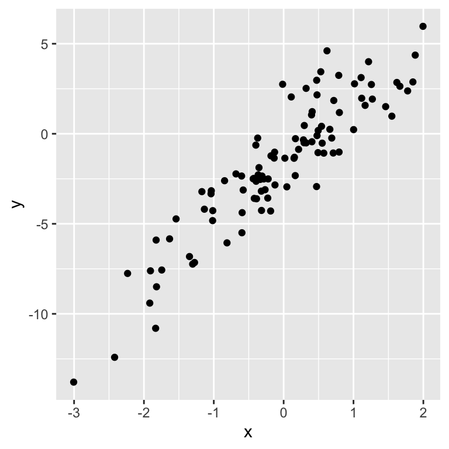
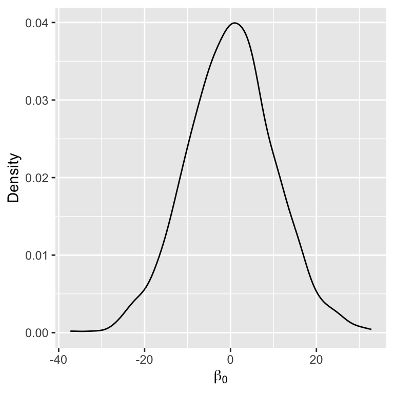
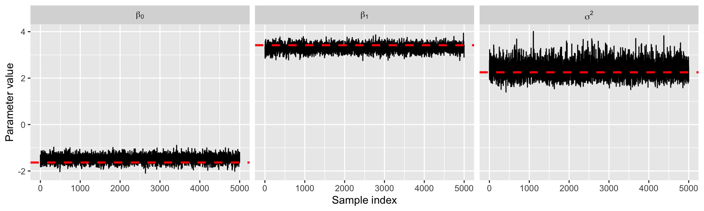
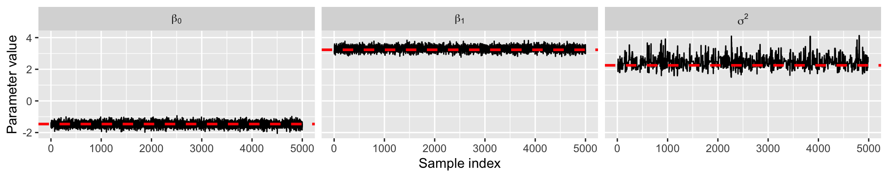

###True parameters
sigma <- 1.5 # true measurement error
beta <- matrix(c(-1.5, 3), ncol = 1) # true beta
###Simulation settings
n <- 100 # number of observations
p <- length(beta) - 1 # number of covariates
###Simulate data
set.seed(54) # set seed
X <- cbind(1, matrix(rnorm(n * p), ncol = p))
Y <- as.numeric(X %*% beta + rnorm(n, 0, sigma))Markov chain Monte Carlo
Prof. Sam Berchuck
Jan 16, 2025
Review of last lecture
On Tuesday, we performed posterior inference for a Beta-Binomial model using Monte Carlo estimation.
Today we will discuss Bayesian estimation of linear regression:
\[\mathbf{Y} | \boldsymbol{\beta}, \sigma^2 \sim N(\mathbf{X} \boldsymbol{\beta}, \sigma^2 \mathbf{I}_n).\]
There is no closed form posterior, so we cannot directly use Monte Carlo sampling.
We need Markov chain Monte Carlo (MCMC)!
Our goal is to gain intuition behind MCMC, the workhorse behind Stan.
Bayesian Linear Regression
Defining the model
Suppose we have an observation \(Y_i\) for subject \(i\) (\(i=1,\ldots,n\)), that is modeled as follows,
\[\begin{aligned} Y_i &= \beta_0 + x_{i1} \beta_1 + \cdots + x_{ip} \beta_p + \epsilon_i, \quad \epsilon_i \sim N(0, \sigma^2)\\ &= \mathbf{x}_i \boldsymbol{\beta} + \epsilon_i. \end{aligned}\]
- \(\mathbf{x}_i = (1, x_{i1},\ldots,x_{ip})\) is a \((p+1)\)-dimensional row vector of covariates (and intercept).
- \(\boldsymbol{\beta} = (\beta_0, \beta_1,\ldots,\beta_p)^\top\) is a \((p+1)\)-dimensional column vector of population regression parameters.
- \(\epsilon_i\) is a Gaussian measurement error term with variance \(\sigma^2\).
Defining the likelihood
The individual likelihood contribution for subject \(i\) is given by, \[Y_i|\boldsymbol{\beta},\sigma^2 \sim N(\mathbf{x}_i \boldsymbol{\beta}, \sigma^2) \Leftrightarrow f(Y_i|\boldsymbol{\beta},\sigma^2) = N(\mathbf{x}_i \boldsymbol{\beta}, \sigma^2),\] and the full data likelihood (or observed data likelihood) is given by, \[f(\mathbf{Y} | \boldsymbol{\beta},\sigma^2) = \prod_{i=1}^n f(Y_i|\boldsymbol{\beta},\sigma^2),\] where \(\mathbf{Y} = (Y_1,\ldots,Y_n)\).
Matrix likelihood specification
We can also write the likelihood directly, \[\mathbf{Y} | \boldsymbol{\beta},\sigma^2 \sim N(\mathbf{X} \boldsymbol{\beta}, \sigma^2 \mathbf{I}_n),\] where \(\mathbf{X}\) is an \(n \times (p + 1)\) dimensional matrix with row \(\mathbf{x}_i\) and \(\mathbf{I}_n\) is an \(n\)-dimensional identity matrix. Thus, the mean of the observed data is modeled as a linear function of the parameters,
\[ \mathbb{E}[ \mathbf{Y} | \boldsymbol{\beta},\sigma^2 ] = \begin{bmatrix} 1 & x_{12} & \ldots & x_{1p} \\ 1 & x_{22} & \ldots & x_{2p} \\ \vdots & \vdots & & \vdots\\ 1 & x_{n2} & \ldots & x_{np} \end{bmatrix} \begin{bmatrix} \beta_0\\ \beta_1\\ \vdots\\ \beta_p \end{bmatrix} = \mathbf{X} \boldsymbol{\beta}. \]
Linear regression estimation
- Ordinary least squares (OLS)
- Maximum likelihood estimation (MLE)
- \(\hat{\boldsymbol{\beta}}_{\text{OLS}} = \hat{\boldsymbol{\beta}}_{\text{MLE}} = (\mathbf{X}^\top \mathbf{X})^{-1}\mathbf{X}^\top \mathbf{Y}\)
Posterior for linear regression
\[\begin{aligned} f(\boldsymbol{\beta}, \sigma^2 | \mathbf{Y}) &= \frac{f(\mathbf{Y}, \boldsymbol{\beta}, \sigma^2)}{f(\mathbf{Y})}\\ &= \frac{f(\mathbf{Y} | \boldsymbol{\beta}, \sigma^2) f(\boldsymbol{\beta}, \sigma^2)}{f(\mathbf{Y})}\\ &= \frac{f(\mathbf{Y} | \boldsymbol{\beta}, \sigma^2) f(\boldsymbol{\beta}, \sigma^2)}{\int f(\mathbf{Y} | \boldsymbol{\beta}, \sigma^2) f(\boldsymbol{\beta}, \sigma^2)d\boldsymbol{\beta}d\sigma^2}. \end{aligned}\]
No closed form exists for the posterior. \[f(\boldsymbol{\beta}, \sigma^2 | \mathbf{Y}) \propto f(\mathbf{Y} | \boldsymbol{\beta}, \sigma^2) f(\boldsymbol{\beta}, \sigma^2)\]
Gibbs Sampling
Motivation for Gibbs sampling
Suppose we were given \(\sigma^{2(1)}\), a single sample from the marginal posterior distribution \(f\left(\sigma^2|\mathbf{Y}\right)\) (from where, who knows?)
Use the sample to generate \(\boldsymbol{\beta}^{(1)}\) from \(f\left(\boldsymbol{\beta}|\mathbf{Y},\sigma^{2(1)}\right)\)
\(\left(\boldsymbol{\beta}^{(1)},\sigma^{2(1)}\right)\) is a sample from \(f\left(\boldsymbol{\beta}, \sigma^2 | \mathbf{Y}\right)\)
\(\boldsymbol{\beta}^{(1)}\) is a sample from \(f\left(\boldsymbol{\beta} | \mathbf{Y}\right)\)
Recall
\(f\left(\boldsymbol{\beta}, \sigma^{2}|\mathbf{Y}\right) = f\left(\boldsymbol{\beta} | \sigma^{2},\mathbf{Y}\right)f\left(\sigma^{2}|\mathbf{Y}\right)\)
Gibbs sampler for linear regression
Suppose we can sample from the following two distribution,
\(f(\boldsymbol{\beta} | \mathbf{Y}, \sigma^2) \propto f(\mathbf{Y} | \boldsymbol{\beta}, \sigma^2) f(\boldsymbol{\beta})\)
\(f(\sigma^2 | \mathbf{Y}, \boldsymbol{\beta}) \propto f(\mathbf{Y} | \boldsymbol{\beta}, \sigma^2) f(\sigma^2)\)
These are called full conditional distributions.
Set initial values for \(\boldsymbol{\theta}^{(0)} = (\boldsymbol{\beta}^{(0)}, \sigma^{2(0)})\). Then, given a current state of parameters \(\boldsymbol{\theta}^{(s)}\), we can generate a new state as follows:
Sample \(\boldsymbol{\beta}^{(s + 1)} \sim f(\boldsymbol{\beta} | \mathbf{Y}, \sigma^{2(s)})\)
Sample \(\sigma^{2(s + 1)} \sim f(\sigma^2 | \mathbf{Y}, \boldsymbol{\beta}^{(s + 1)})\)
Let \(\boldsymbol{\theta}^{(s+1)} = (\boldsymbol{\beta}^{(s + 1)}, \sigma^{2(s + 1)})\)
Why does this work?
\(\boldsymbol{\theta}^{(0)}\) isn’t a sample from the posterior, it is an arbitrarily chosen initial value
\(\boldsymbol{\theta}^{(1)}\) likely isn’t from the posterior either. Its distribution depends on \(\boldsymbol{\theta}^{(0)}\)
\(\boldsymbol{\theta}^{(2)}\) likely isn’t from the posterior either. Its distribution depends on \(\boldsymbol{\theta}^{(0)}\) and \(\boldsymbol{\theta}^{(1)}\)
Theorem: For any initial values, the chain will eventually converge to the posterior
Theorem: If \(\boldsymbol{\theta}^{(s)}\) is a sample from the posterior, then \(\boldsymbol{\theta}^{(s+1)}\) is too
Gibbs sampler
Under mild regulatory conditions that are generally satisfied for most statistical models, one can show that the iteration \(\boldsymbol{\theta}^{(s)}\) converges in distribution to a draw from the true joint posterior distribution
So for \(s\) sufficiently large (say, bigger than \(s_0\)), \(\left\{\boldsymbol{\theta}^{(s)}, s=s_0+1,\ldots,S\right\}\) is a correlated sample from the true joint posterior (and \(\boldsymbol{\beta}^{(s)}\) and \(\sigma^{2(s)}\) are samples from the marginals)
Similar to Monte Carlo approximation, we can use these samples to estimate posterior quantities of interest
Gibbs sampler
\(\boldsymbol{\theta}^{(t)}\) depends on \(\boldsymbol{\theta}^{(0)},\ldots,\boldsymbol{\theta}^{(t-1)}\) only through \(\boldsymbol{\theta}^{(t-1)}\)
\(\boldsymbol{\theta}^{(t)}\) is conditionally independent of \(\boldsymbol{\theta}^{(0)},\ldots,\boldsymbol{\theta}^{(t-2)}\) given \(\boldsymbol{\theta}^{(t-1)}\)
\(\implies\) Markov property, so the sequence is called a Markov chain
We use the samples similar to MC approximation; therefore, Gibbs sampling is a form of Markov chain Monte Carlo (MCMC)
We will cover diagnostics for MCMC in another lecture!
Gibbs sampler for linear regression
We need to compute the full conditionals. Before doing this, we require prior distributions.
Let’s assume that the prior for \(\boldsymbol{\beta}\) is Gassian,
\[f(\boldsymbol{\beta}) = N(\boldsymbol{\beta}_0,\sigma_{\beta}^2 \mathbf{I}_{p+1}).\]
- \(\boldsymbol{\beta}_0\) is the prior mean (i.e., our a-priori guess for the likely value of \(\boldsymbol{\beta}\))
- \(\sigma_{\beta}^2\) is the prior variance (i.e., encodes our certainty for our a-priori guess)
Full conditional for \(\boldsymbol{\beta}\)
\[\begin{aligned} f(\boldsymbol{\beta},\sigma^2 | \mathbf{Y}) &\propto f(\mathbf{Y} | \boldsymbol{\beta},\sigma^2) f(\boldsymbol{\beta})\\ &\propto \exp\left\{-\frac{1}{2}\left[\frac{\left(\mathbf{Y} - \mathbf{X}\boldsymbol{\beta}\right)^\top\left(\mathbf{Y} - \mathbf{X}\boldsymbol{\beta}\right)}{\sigma^2}\right]\right\}\\ &\quad \times \exp\left\{-\frac{1}{2}\left[\frac{\left(\boldsymbol{\beta} - \boldsymbol{\beta}_0\right)^\top\left(\boldsymbol{\beta}_0 - \boldsymbol{\beta}_0\right)}{\sigma_{\beta}^2}\right]\right\}\\ &\propto \exp\left\{-\frac{1}{2}\left[\boldsymbol{\beta}^\top\left(\frac{\mathbf{X}^\top \mathbf{X}}{\sigma^2} + \frac{\mathbf{I}_n}{\sigma_{\beta}^2} \right)\boldsymbol{\beta} - 2\boldsymbol{\beta}^\top\left(\frac{\mathbf{X}^\top\mathbf{Y}}{\sigma^2} + \frac{\boldsymbol{\beta}_0}{\sigma_{\beta}^2}\right)\right]\right\}\\ &\propto \exp\left\{-\frac{1}{2}\left[\boldsymbol{\beta}^\top\mathbf{A}\boldsymbol{\beta} - 2\boldsymbol{\beta}^\top\mathbf{a}\right]\right\} \end{aligned}\]
This is the kernel of a multivariate normal for \(\boldsymbol{\beta}\), with \(\mathbf{A} = \boldsymbol{\Sigma}^{-1}\) and \(\mathbf{a} = \boldsymbol{\Sigma}^{-1}\boldsymbol{\mu}\). It’s easy to see then that, \(f(\boldsymbol{\beta} | \mathbf{Y}) = N(\mathbf{A}^{-1}\mathbf{a},\mathbf{A}^{-1}).\)
Recall the kernel for the multivariate normal: \(\exp\left\{-\frac{1}{2}\left[\mathbf{Y}^\top \boldsymbol{\Sigma}^{-1}\mathbf{Y} - 2\mathbf{Y}^\top \boldsymbol{\Sigma}^{-1} \boldsymbol{\mu}\right]\right\}\)
Full conditional for \(\boldsymbol{\beta}\)
The full conditional can be found in closed-form and is Gaussian with the following moments: \[\begin{aligned} \mathbb{V}(\boldsymbol{\beta} | \mathbf{Y},\sigma^2) &= \left(\frac{\mathbf{I}_{p+1}}{\sigma_{\beta}^2} + \frac{\mathbf{X}^\top \mathbf{X}}{\sigma^2}\right)^{-1}\\ \mathbb{E}[\boldsymbol{\beta} | \mathbf{Y},\sigma^2] &= \left(\frac{\mathbf{I}_{p+1}}{\sigma_{\beta}^2} + \frac{\mathbf{X}^\top \mathbf{X}}{\sigma^2}\right)^{-1}\left(\frac{\boldsymbol{\beta}_0}{\sigma_{\beta}^2} + \frac{\mathbf{X}^\top \mathbf{Y}}{\sigma^2}\right) \end{aligned}\]
- \(\sigma_{\beta}^2 \rightarrow \infty: \mathbb{E}[\boldsymbol{\beta} | \mathbf{Y},\sigma^2] = (\mathbf{X}^\top \mathbf{X})^{-1}\mathbf{X}^\top \mathbf{Y} = \hat{\boldsymbol{\beta}}_{\text{OLS}} = \hat{\boldsymbol{\beta}}_{\text{MLE}}\)
- \(\sigma^2 \rightarrow \infty: \mathbb{E}[\boldsymbol{\beta} | \mathbf{Y},\sigma^2] = \boldsymbol{\beta}_0\)
Full conditional for \(\sigma^2\)
Full conditional for \(\sigma^2\), assuming \(f(\sigma^2) \sim IG(a, b)\):
\[\sigma^2 | \mathbf{Y} , \boldsymbol{\beta} \sim IG\left(a + \frac{n}{2},b+\frac{\left(\mathbf{Y}-\mathbf{X}\boldsymbol{\beta}\right)^\top\left(\mathbf{Y}-\mathbf{X}\boldsymbol{\beta}\right)}{2}\right)\]
- Why inverse-Gamma (\(IG\)) distribution for \(\sigma^2\)?
Sampling from the posterior
Let’s simulate some data:
Visualize simulated data


Inspecting the prior



Perform Gibbs sampling
sigma2 <- exp(rnorm(1)) # initial value
samples <- NULL
for (s in 1:5000) {
###Sample from full conditional for beta
var_beta <- chol2inv(chol(t(X) %*% X / sigma2 + diag(p + 1) / sigma_beta^2))
mean_beta <- var_beta %*% (beta0 / sigma_beta^2 + t(X) %*% Y / sigma2)
beta <- as.numeric(rmvnorm(1, mean_beta, var_beta))
###Sample from full conditional for sigma2
quadratic <- as.numeric(t(Y - X %*% beta) %*% (Y - X %*% beta))
sigma2 <- 1 / rgamma(1, shape = a + n / 2, rate = b + quadratic / 2)
###Save samples after a burn-in
samples <- rbind(samples, c(beta, sigma2))
}Inspect results


Summary of Gibbs sampling
Gibbs sampling is great when we are able to sample from the full conditional distributions.
It has been the main inference machine for Bayesian inference since the early 1990s.
Computing full conditionals and coding up a Gibbs sampler can be mathematically and computationally rigorous.
New classes of MCMC are becoming more common to make Bayesian inference less rigorous.
Metropolis sampling
Intuition behind Metropolis sampling
Suppose we have a working collection \(\{\boldsymbol{\theta}^{(1)},\ldots,\boldsymbol{\theta}^{(s)}\}\) to which we would like to add a new value \(\boldsymbol{\theta}^{(s+1)}\). Let’s consider adding a value \(\boldsymbol{\theta}^*\) which is nearby \(\boldsymbol{\theta}^{(s)}\). Should we include \(\boldsymbol{\theta}^*\) in the set or not?
If \(f(\boldsymbol{\theta}^* | \mathbf{Y}) > f(\boldsymbol{\theta}^{(s)} | \mathbf{Y})\) then we want more \(\boldsymbol{\theta}^*\)’s in the set than \(\boldsymbol{\theta}^{(s)}\)’s.
- Since \(\boldsymbol{\theta}^{(s)}\) is already in the set, then it seems we should include \(\boldsymbol{\theta}^*\) as well.
On the other hand, if \(f(\boldsymbol{\theta}^* | \mathbf{Y}) < f(\boldsymbol{\theta}^{(s)} | \mathbf{Y})\) then it seems we should not necessarily include \(\boldsymbol{\theta}^*\).
So, perhaps our decision to include \(\boldsymbol{\theta}^*\) or not should be based on a comparison of \(f(\boldsymbol{\theta}^* | \mathbf{Y})\) to \(f(\boldsymbol{\theta}^{(s)} | \mathbf{Y})\).
Metropolis acceptance ratio
- Fortunately, the comparison of \(f(\boldsymbol{\theta}^* | \mathbf{Y})\) to \(f(\boldsymbol{\theta}^{(s)} | \mathbf{Y})\) can be made even if we cannot compute \(f(\boldsymbol{\theta} | \mathbf{Y})\).
\[\begin{aligned} r &= \frac{f(\boldsymbol{\theta}^* | \mathbf{Y})}{f(\boldsymbol{\theta}^{(s)} | \mathbf{Y})}\\ &= \frac{f(\mathbf{Y} | \boldsymbol{\theta}^*)f(\boldsymbol{\theta}^*)}{f(\mathbf{Y})}\frac{f(\mathbf{Y})}{f(\mathbf{Y} | \boldsymbol{\theta}^{(s)})f(\boldsymbol{\theta}^{(s)})}\\ &= \frac{f(\mathbf{Y} | \boldsymbol{\theta}^*)f(\boldsymbol{\theta}^*)}{f(\mathbf{Y} | \boldsymbol{\theta}^{(s)})f(\boldsymbol{\theta}^{(s)})} \end{aligned}\]
Having computed \(r\), how should we proceed?
Metropolis intuition
Metropolis ratio: \(r = \frac{f(\mathbf{Y} | \boldsymbol{\theta}^*)f(\boldsymbol{\theta}^*)}{f(\mathbf{Y} | \boldsymbol{\theta}^{(s)})f(\boldsymbol{\theta}^{(s)})}\)
If \(r > 1:\)
Intuition: Since \(\boldsymbol{\theta}^{(s)}\) is already in our set, we should include \(\boldsymbol{\theta}^*\) as it has a higher probability than \(\boldsymbol{\theta}^{(s)}\)
Procedure: Accept \(\boldsymbol{\theta}^*\) into our set (i.e., set \(\boldsymbol{\theta}^{(s + 1)} = \boldsymbol{\theta}^*\))
If \(r < 1:\)
Intuition: The relative frequency of \(\boldsymbol{\theta}\)-values in our set equal to \(\boldsymbol{\theta}^*\) compared to those equal to \(\boldsymbol{\theta}^{(s)}\) should be \(r\). This means that for every instance of \(\boldsymbol{\theta}^{(s)}\), we should have only a “fraction” of an instance of a \(\boldsymbol{\theta}^*\) value.
Procedure: Set \(\boldsymbol{\theta}^{(s + 1)}\) equal to either \(\boldsymbol{\theta}^*\) or \(\boldsymbol{\theta}^{(s)}\), with probability \(r\) and \(1 − r\) respectively.
Metropolis update
Given \(\boldsymbol{\theta}^{(s)}\), the Metropolis algorithm generates a value \(\boldsymbol{\theta}^{(s + 1)}\) as follows:
Sample \(\boldsymbol{\theta}^*\) from a proposal distribution, \(\boldsymbol{\theta}^* ∼ J(\boldsymbol{\theta} | \boldsymbol{\theta}^{(s)})\)
Compute the acceptance ratio \(r\)
Let \[\boldsymbol{\theta}^{(s + 1)} = \left\{ \begin{array}{ll} \boldsymbol{\theta}^* & \text{with probability }\min(r, 1) \\ \boldsymbol{\theta}^{(s)} & \text{with probability }1 -\min(r, 1) \end{array} \right.\]
Metropolis proposal distribution
The proposal distribution is symmetric (i.e., \(J(\boldsymbol{\theta}_a | \boldsymbol{\theta}_b) = J(\boldsymbol{\theta}_b | \boldsymbol{\theta}_a)\)
Usually \(J(\boldsymbol{\theta} | \boldsymbol{\theta}^{(s)})\) is very simple, with samples from \(J(\boldsymbol{\theta} | \boldsymbol{\theta}^{(s)})\) being near \(\boldsymbol{\theta}\) with high probability.
The most common proposal is a normal distribution
- \(J(\boldsymbol{\theta} | \boldsymbol{\theta}^{(s)}) = N(\boldsymbol{\theta}^{(s)}, \boldsymbol{\Delta})\)
The value of the parameter \(\boldsymbol{\Delta}\) is generally chosen to make the approximation algorithm run efficiently
Metropolis and Gibbs combined
The Gibbs and Metropolis samplers are actually both algorithms within a larger class of Metropolis-Hastings algorithms
When performing MCMC, one can actually choose to update a parameter using either a Gibbs or Metropolis update
Let’s see this in action using our linear regression example
Linear regression using Metropolis/Gibbs
In this example, we will use a Metropolis update for \(\sigma^2\), however we will actually focus on \(\log\sigma^2\).
- Metropolis requires a symmetric proposal, so it is often easier to transform parameters to be on the real line and use a normal proposal.
We will use the following proposal, \(\log\sigma^{2*} \sim N\left(\log\sigma^{2(s)}, \delta\right)\), where \(\delta = 1\).
We will place the prior: \(\log\sigma^2 \sim N(0,1)\).
Linear regression using Metropolis/Gibbs
sigma2 <- exp(rnorm(1))
samples <- NULL
delta <- 1
for (s in 1:10000) {
###Sample from full conditional for beta
var_beta <- chol2inv(chol(t(X) %*% X / sigma2 + diag(p + 1) / sigma_beta^2))
mean_beta <- var_beta %*% (beta0 / sigma_beta^2 + t(X) %*% Y / sigma2)
beta <- as.numeric(rmvnorm(1, mean_beta, var_beta))
###Metropolis update for sigma2
# Sample a proposal value
log_sigma2_proposal <- rnorm(1, log(sigma2), delta)
# Compute the ratio r on the log scale for numeric stability
# Also, I've decided to update log(sigma2) instead of sigma2, so I can use a normal proposal distribution
# I've placed a normal prior on log(sigma2)
likelihood_proposal <- sum(dnorm(Y, X %*% beta, sqrt(exp(log_sigma2_proposal)), log = TRUE))
likelihood_current <- sum(dnorm(Y, X %*% beta, sqrt(sigma2), log = TRUE))
prior_proposal <- dnorm(log_sigma2_proposal, 0, 1, log = TRUE)
prior_current <- dnorm(log(sigma2), 0, 1, log = TRUE)
log_r <- (likelihood_proposal + prior_proposal) - (likelihood_current + prior_current)
# Update beta using Metropolis ratio
if (log(runif(1)) < log_r) sigma2 <- exp(log_sigma2_proposal)
###Save samples after a burn-in
if (s > 5000) samples <- rbind(samples, c(beta, sigma2))
}Inspect results


Summary of Metropolis algorithm
More flexible than Gibbs sampling, because we are no longer required to compute the full conditional distribution analytically.
Posterior samples can be obtained, however the algorithm must be properly tuned (i.e., choosing \(\delta\)) and the samples may take longer to converge.
Furthermore, choosing a proper proposal distribution can be difficult in practice.
In more recent years, Hamiltonian Monte Carlo has emerged as an new MCMC approach that alleviates the aforementioned issues.
Metropolis-Hastings (MH) algorithm
The proposal distribution is no longer assumed to be symmetric, so the acceptance ratio is, \[\begin{aligned} r &= \frac{f(\mathbf{Y} | \boldsymbol{\beta}^*, \sigma^{2(s)}) f(\boldsymbol{\beta}^*)}{f(\mathbf{Y} | \boldsymbol{\beta}^{(s)},\sigma^{2(s)})f(\boldsymbol{\beta}^{(s)})} \frac{J(\boldsymbol{\beta}^{(s)} | \boldsymbol{\beta}^*)}{J(\boldsymbol{\beta}^* | \boldsymbol{\beta}^{(s)})}. \end{aligned}\]
Both Metropolis and Gibbs can easily be seen as subcases of Metropolis Hastings.
Metropolis assumes a symmetric proposal, so the proposal terms cancel.
Gibbs assumes that \(J(\boldsymbol{\beta}^{(s)} | \boldsymbol{\beta}^*) = f(\boldsymbol{\beta}^* | \mathbf{Y}, \sigma^{2(s)})\), which implies that \(r=1\).
Hamiltonian Monte Carlo (HMC) intuition
HMC is a new MCMC approach that has been shown to work better than the usual MH algorithm.
It is based on the idea of Hamiltonian dynamics (a physical concept)
Rollercoaster Metaphor
Imagine you’re on a roller coaster at an amusement park. As the roller coaster moves along the track, it goes up and down hills. When the roller coaster is at the top of a hill, it has a lot of potential energy (like stored energy). When it goes down the hill, that potential energy turns into kinetic energy (energy of motion), making the roller coaster go faster. Hamiltonian dynamics is like a set of rules that tells us how the roller coaster’s energy changes as it moves along the track.
HMC intuition
Hamiltonian dynamics is used to generate a proposal from a better proposal distribution, \(J(\boldsymbol{\beta}^{(s)} | \boldsymbol{\beta}^*)\), and modifies the acceptance part so the it has a higher acceptance rate.
Just like the roller coaster follows the track smoothly, Hamiltonian Monte Carlo (HMC) helps us explore different possibilities smoothly and efficiently. This way, we can make more efficient samples from the posterior, just like how the roller coaster moves quickly and smoothly along its track.
HMC requires evaluations of \(\log f(\boldsymbol{\theta} | \mathbf{Y})\) and \(\nabla_{\boldsymbol{\theta}} \log f(\boldsymbol{\theta} | \mathbf{Y})\),
\[\log f(\boldsymbol{\theta} | \mathbf{Y}) \propto \log f(\mathbf{Y} | \boldsymbol{\theta}) + \log f(\boldsymbol{\theta})\]
Prepare for next class
Begin HW 01 which is due January 30
Be sure to turn in your AE by Sunday evening
Complete reading to prepare for next Tuesday’s lecture
Tuesday’s lecture: Probabilistic Programming (Intro to Stan!)